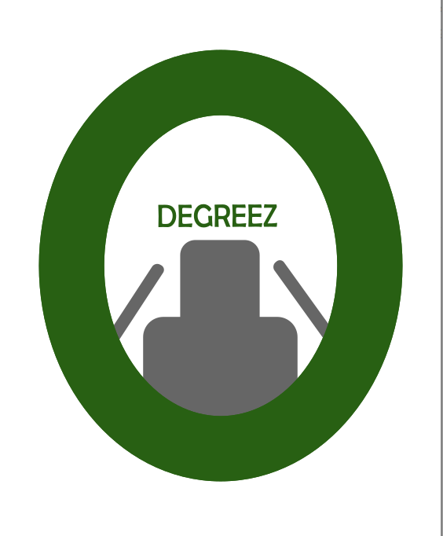

GIMP projekti
GIMP programmā mēs mācījāmies rediģēt attēlus un veidot animācijas.

GIMP programmā mēs mācījāmies rediģēt attēlus un veidot animācijas.
Mums izdalīja tēmas, par kurām mums bija jāuzraksta Word dokuments. Mēs izmantojām informāciju, kas bija šajā dokumentā, lai uztaisītu plakātu Inkscape programmā.

Kad mēs bijām izmēģinājuši Inkscape funkcijas ar plakātu veidošanu, skolotāja mums iedeva jaunu uzdevumu, kur mums bija jāuztaisa logo savas grupas uzņēmumam. Tas arī saistījās ar mūsu nākamo datorikas tēmu.

Mēs veidojām 3D puzles un montējām video.
Word programmā mēs veidojām dokumentus un formatējām tekstu.
Excel programmā mēs veidojām tabulas, izmantojām formulas un veidojām diagrammas.